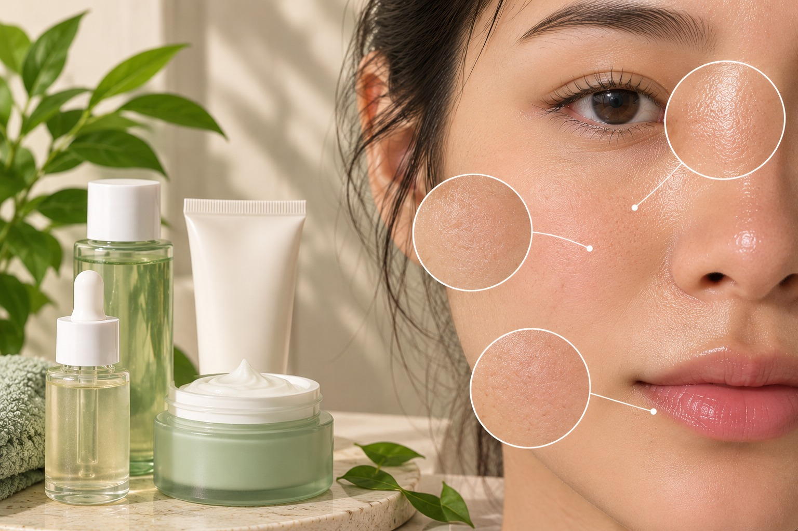

What is Combination Skin?
Combination skin has both oily and dry or normal areas.
The forehead, nose, and chin (T-zone) may be oily,
while the cheeks may feel dry or normal.

Common Characteristics
- Forehead and nose may look shiny.
- Cheeks may feel dry or normal.
- Pores may be more visible in the T-zone.
- Different areas of the face may need different care.
- Oiliness may change with weather or skincare products.
Basic Skincare Routine
- Use a gentle cleanser for your whole face.
- Apply a lightweight moisturizer where needed.
- Use extra moisturizer on dry areas if necessary.
- Apply broad-spectrum SPF 30 or higher sunscreen daily.
Ingredients to Know
-
Niacinamide:
May help manage the appearance of excess oil and support the skin barrier.
-
Hyaluronic Acid:
Helps the skin retain moisture.
-
Ceramides:
Help support the skin's natural protective barrier, especially in dry areas.
Precautions
- Avoid harsh cleansers.
- Do not overwash your face to remove oil.
- Avoid using too many active ingredients at once.
- Choose products suitable for your skin.
- Do not skip moisturizer on oily areas.
- Apply sunscreen daily.
Note:
Everyone's skin is different. These characteristics are
general guidelines, not a medical diagnosis.
Introduce new products carefully and stop if irritation occurs.